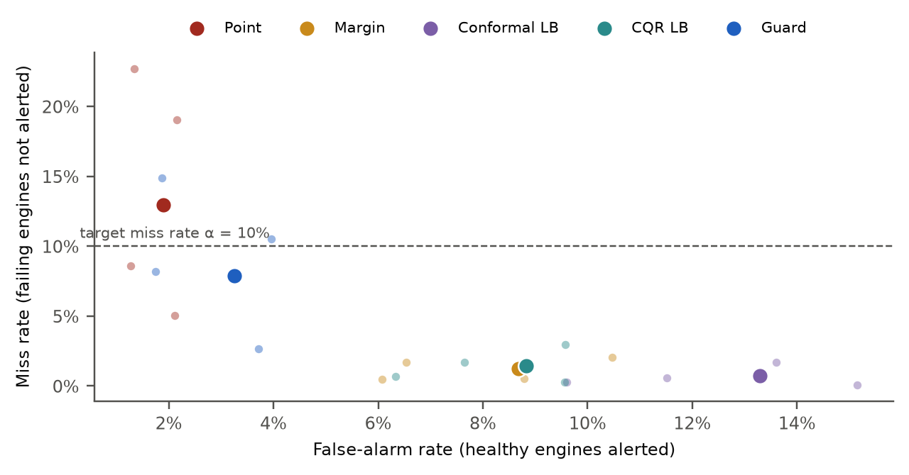
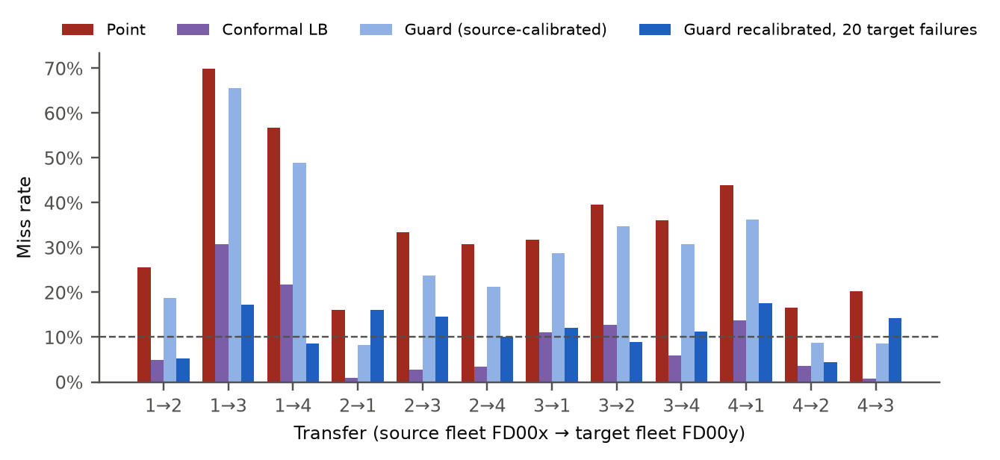
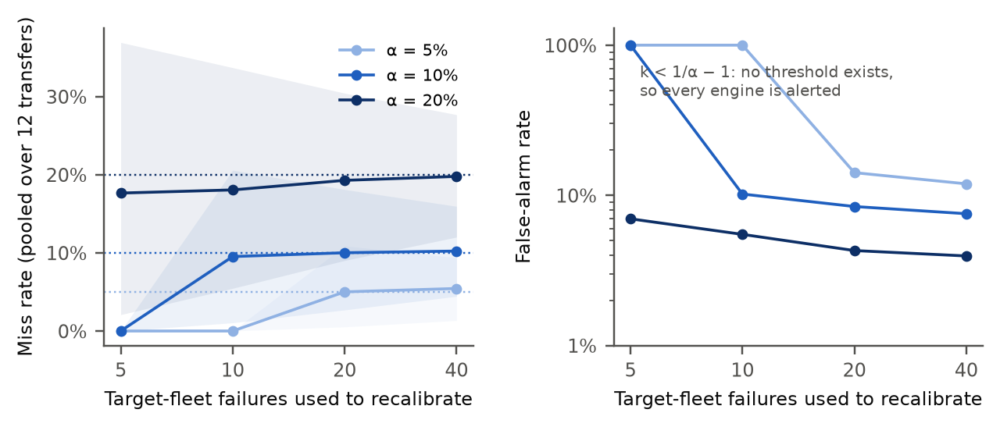
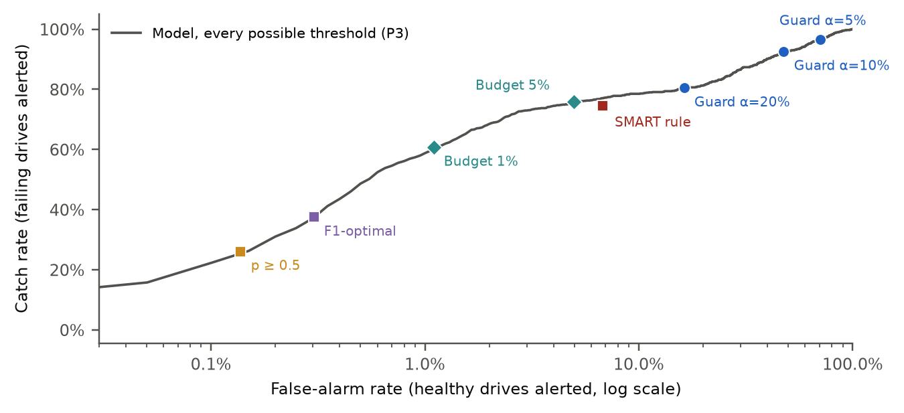

Machine-learning models that predict the remaining useful life (RUL) of machines are usually judged by their average error. A maintenance team, however, acts on alarms, and the dangerous error is a machine that fails before the next inspection because no alarm was raised. We first reproduced a public benchmark on NASA's C-MAPSS turbofan simulation (Random Forest MAE 13.39 cycles vs. 13.38 reported). We then measured alarms instead of averages and introduced the guard, a conformal alert rule that sets its threshold from a small set of recorded failures so that the miss rate among failing machines is at most a chosen α, with a finite-sample guarantee. In a pre-registered study (8 hypotheses, frozen with SHA-256 hashes, Holm-corrected bootstrap tests), the guard targeting α = 10% missed 7.9% [4.9, 11.3] of failing engines on the official C-MAPSS test sets, with 10.0 and 5.6 percentage points fewer false alarms than split-conformal and conformalized-quantile-regression bounds. When a model was moved to a different fleet, the guarantee broke (27.1% missed), but recalibrating the threshold on 20 failures from the new fleet restored it (10.0% [7.1, 13.3]). On a real fleet of 343,944 hard drives with 5,730 failures, evaluated three months after calibration, the industry SMART rule missed 25.6% of failures, while the guard missed 7.4% [6.0, 9.0]. It stayed valid on manufacturers never seen in training once it was recalibrated on 20 of their failures (8.3%). The guarantee is honest about cost, though. Because many drives fail without any SMART warning, a 90% catch guarantee required alerting 48% of healthy drives, while a 5% inspection budget certified a catch rate of about 74% (76% achieved). Seven of eight hypotheses were supported. The exception was that a plain point-prediction alarm on the same fleet missed 12.9% [8.5, 17.7], not significantly more than 10%.
Unexpected machine failures stop production lines, ground aircraft, and destroy data. Predictive maintenance tries to replace fixed service schedules with decisions based on sensor data: if a model can tell that a machine is close to failure, it can be serviced just in time, neither too early (wasting useful life) nor too late (an in-service failure) [4]. The standard research benchmark for this task is NASA's C-MAPSS turbofan simulation [1, 2], where a model predicts the remaining useful life (RUL) of an engine, in operating cycles, from its sensor history.
Papers on C-MAPSS almost always report the average size of the error, as mean absolute error (MAE) or root-mean-squared error (RMSE). This project started the same way. Our first report compared Linear Regression, Random Forest and XGBoost on the FD001 sub-dataset and quoted a public benchmark in which Random Forest reached an MAE of 13.38 cycles [3]. We first reproduced that benchmark on our own server (Section 3), obtaining an MAE of 13.39 cycles. But reproducing it raised the question this paper is about:
We show that the answer is no. A model with a competitive RMSE, alerting when its predicted RUL falls below the inspection interval, misses a large share of the engines that are about to fail, and far more when the fleet changes (new operating conditions or a new fault mode). We then build and test an alert rule, the guard, that turns any RUL or risk model into an alarm with a certified miss rate. The user chooses the acceptable miss rate α (for example 10%), and a short calculation on a small set of past failures sets the alert threshold so that, under a stated assumption, at most a fraction α of failing machines are missed. The method comes from conformal prediction [5–8]. Our contribution is to apply it to the right quantity (misses among machines that are about to fail, not average coverage), to measure what it costs in false alarms, to show when the guarantee breaks, and to show how many real failures are needed to repair it.
Because the original report's main limitation was that C-MAPSS is simulated, we also test everything on a real fleet: daily SMART sensor records from 343,944 hard drives operated by Backblaze in 2024–2025 [9], including 5,730 real failures. All hypotheses, settings and analysis code were pre-registered (frozen with SHA-256 hashes) before the test data were evaluated.
Contributions. (1) An independent reproduction of the public FD001 benchmark. (2) Evidence that RUL error metrics hide unsafe alarms, in-fleet and across fleets. (3) The guard: a distribution-free alert rule with a finite-sample miss-rate guarantee, plus a minimum-data rule and a prediction of how much the realised miss rate varies. (4) A budget mode that tells an operator what catch rate a fixed inspection budget certifies. (5) A pre-registered evaluation on 4 simulated fleets, 12 cross-fleet transfers, and a real drive fleet tested three months into the future and on unseen manufacturers.
C-MAPSS simulates turbofan engines that start with unknown wear and degrade until failure [1]. It has four sub-datasets (Table 1). Each row is one engine at one cycle: three operating settings and 21 sensor readings. Training engines run until failure, so their RUL at every cycle is known. Test engines stop at a random point before failure, and the true RUL at that point is provided separately. FD002 and FD004 mix six operating conditions; FD003 and FD004 contain two fault modes (high-pressure compressor and fan degradation).
| Fleet | Conditions | Fault modes | Train engines | Test engines | At risk (test) |
|---|---|---|---|---|---|
| FD001 | 1 | 1 | 100 | 100 | 25 |
| FD002 | 6 | 1 | 260 | 259 | 61 |
| FD003 | 1 | 2 | 100 | 100 | 20 |
| FD004 | 6 | 2 | 249 | 248 | 53 |
Backblaze publishes one record per drive per day for every drive in its data centres: model, capacity, a failure flag, and SMART (Self-Monitoring, Analysis and Reporting Technology) attributes such as reallocated sectors (SMART 5) or uncorrectable errors (SMART 187) [9]. A drive "fails" when it is removed because it stopped working or was about to. We used January 2024 to March 2025 (456 days, about 125 million drive-days). The industry rule of thumb used by Backblaze itself flags a drive when any of SMART 5, 187, 188, 197 or 198 is above zero [10]; we use it as a real-world baseline.
Conformal prediction is a family of methods that wrap any model and give guarantees that hold for finite samples and need no assumption about the data distribution other than exchangeability (the calibration examples and the new example are like random draws from the same population, in any order) [5, 6]. The usual version gives a prediction interval that contains the truth with probability at least 1 − α, averaged over all examples. Variants that hold separately within each class are called label-conditional or Mondrian [6, 7]. Conformalized quantile regression (CQR) [8] is a strong recent variant that adapts the interval width to each input. Conformal prediction intervals for RUL on C-MAPSS were introduced in [11]. Robinson [12] made them asymmetric, spending more of the error budget on over-estimates because late maintenance is the costlier mistake; this is the closest work to ours. Both guarantee coverage averaged over all prediction points. What we add is: (i) the guarantee is placed directly on the decision that matters, the misses among units that are about to fail; (ii) its false-alarm cost is measured against those interval methods; (iii) it is tested across fleets and on a real fleet, with a rule for how many failures are needed to recalibrate.
The original report quoted MAE and RMSE values for three models on FD001 from a public repository [3] and correctly warned that they were not the team's results. We re-ran the experiment from the official NASA files. Following common practice we capped the training target at 125 cycles (an engine early in life shows no measurable wear, so its exact RUL cannot be predicted), dropped seven sensors that are constant in FD001, and scored the prediction at the last cycle of each of the 100 official test engines against the true RUL.
| Model | MAE [3] | MAE (ours) | RMSE [3] | RMSE (ours) | R² (ours) |
|---|---|---|---|---|---|
| Linear Regression | 17.64 | 17.62 | 22.01 | 21.90 | 0.722 |
| Random Forest | 13.38 | 13.39 | 18.13 | 18.28 | 0.806 |
| XGBoost | 13.43 | 13.17 | 18.46 | 18.17 | 0.809 |
The reproduction matches to within 0.3 cycles, so the reported numbers are credible. However, in the same Random Forest run, 57 of the 100 test predictions were too late (predicted RUL above the true RUL), which is the dangerous direction. The rest of this paper studies that direction directly.
We model a fleet that is inspected every W time units (cycles for engines, days for drives). At an inspection, a unit is at risk if its true RUL ≤ W: if it is not serviced now, it will fail before the next inspection. An alert rule maps the model's output for a unit to "service now" or "wait". Two error rates matter:
The primary setting is W = 30 and target miss rate α = 0.10; W ∈ {20, 30, 50} cycles (C-MAPSS) or {7, 30} days (Backblaze), and α ∈ {0.05, 0.10, 0.20} are reported as secondary.
C-MAPSS. Sensors are standardised within each operating condition (conditions found by k-means on the three settings), using statistics from the fleet's own data but never its failure labels, so the same step is possible for a newly deployed fleet. Features are the 14 informative sensors, their 10-cycle rolling mean and 20-cycle rolling slope, and the cycle count (43 features). The point model is XGBoost regression [13] on the RUL capped at 125. A second XGBoost model with the quantile loss gives a lower quantile for CQR.
Backblaze. For each drive and day we use 23 SMART raw values, plus the 7-day and 30-day change of the 13 error counters, plus capacity (50 features). The model is an XGBoost classifier for "fails within W days". The drive model name was deliberately left out, so the model can be applied to an unseen manufacturer. In development, adding it did not reduce the false-alarm cost.
| Rule | Alert when | Origin |
|---|---|---|
| Point | ŷ ≤ W | The natural use of a RUL model |
| Margin | ŷ ≤ W + RMSEcal | Engineering "safety margin" |
| Conformal lower bound | ŷ − q ≤ W, q = conformal quantile of (ŷ − y) | Standard split conformal, one-sided [5] |
| CQR lower bound | ŷα − e ≤ W | Conformalized quantile regression [8] |
| Guard (ours) | ŷ ≤ tα, threshold from at-risk calibration units | Label-conditional conformal [6, 7] on misses |
| SMART rule (drives) | any of SMART 5/187/188/197/198 > 0 | Industry practice [10] |
| Default / F1-optimal (drives) | p ≥ 0.5, or p ≥ threshold maximising F1 on calibration | Common ML practice |
Take n calibration units that were observed while at risk (one snapshot per unit, drawn uniformly from its last W time units before failure) and compute the model's score for each: s1, …, sn. Sort them and set
k = ⌈(n + 1)(1 − α)⌉, tα = s(k) (the k-th smallest), alert iff ŷ ≤ tα.
Three practical consequences follow and are tested below:
Budget mode (drives). An operator may instead have a fixed inspection budget, for example 1% of healthy drives per month. The threshold is then the 99th percentile of calibration scores of healthy drives, and the guard's argument run in reverse gives a certificate: if m of the n calibration failures fall below the threshold, the expected miss rate is at most (m + 1)/(n + 1).
Recalibration under fleet change. Exchangeability fails when the new fleet differs from the calibration fleet. The fix we test is simple: keep the model, but recompute tα from k failures recorded in the new fleet (k ∈ {5, 10, 20, 40} engines; {10, 20, 40, 80} drives).
Development (all choices of features, models and settings) used only the C-MAPSS training files, split by engine into fit / calibration / evaluation (50/25/25%, 30 repetitions), and only the first half of 2024 (P1) of the drive data. Confirmatory tests were run once, after freezing:
The engine or drive is the independent unit everywhere: one snapshot per unit, no unit in two roles, and confidence intervals from a 10,000-draw bootstrap over units (stratified by fleet), with each unit's outcome averaged over repetitions. Eight hypotheses (Table 4) were fixed in prereg.json together with SHA-256 hashes of all code and data before any confirmatory run. A hypothesis is supported only if its 95% CI criterion is met and its one-sided bootstrap p-value survives Holm correction across all eight. Non-inferiority claims use a margin of 0.05 (the miss rate's upper 95% bound must be ≤ 0.15 when α = 0.10).
Disclosure. Before freezing, the official FD001 test set was used for the benchmark reproduction (Section 3), and the FD001 and FD003 test sets were used once in a pilot with a different model and features. No settings were tuned on them afterwards. The software is Python 3.11, scikit-learn 1.9.1, XGBoost 3.2.0, pandas 3.0.6 and DuckDB 1.5.6, run on a 2-core ARM cloud server. Code: [repository URL].
| ID | Claim | Estimate | 95% CI | p (Holm) | Result |
|---|---|---|---|---|---|
| H1 | C-MAPSS in-fleet: point-alert miss rate > alpha | 0.129 | [0.085, 0.177] | 0.105 | Not supported |
| H2 | C-MAPSS in-fleet: guard miss rate <= alpha + margin | 0.079 | [0.049, 0.113] | <0.001 | Supported |
| H3a | C-MAPSS in-fleet: guard false-alarm rate < conformal_lb | -0.100 | [-0.121, -0.080] | <0.001 | Supported |
| H3b | C-MAPSS in-fleet: guard false-alarm rate < cqr_lb | -0.056 | [-0.071, -0.042] | <0.001 | Supported |
| H4 | C-MAPSS cross-fleet: source-calibrated guard miss > alpha | 0.271 | [0.226, 0.316] | <0.001 | Supported |
| H5 | C-MAPSS cross-fleet: guard recalibrated on 20 target failures, miss <= alpha + margin | 0.100 | [0.071, 0.133] | 0.004 | Supported |
| H6 | Backblaze, 3 months later: SMART-rule miss rate > alpha | 0.256 | [0.230, 0.283] | <0.001 | Supported |
| H7 | Backblaze, 3 months later: guard miss rate <= alpha + margin | 0.074 | [0.060, 0.090] | <0.001 | Supported |
| H8 | Backblaze, unseen manufacturer: guard recalibrated on 20 failures, miss <= alpha + margin | 0.083 | [0.071, 0.097] | <0.001 | Supported |

On the official test engines of the fleet they were trained on, all five rules are compared in Figure 2 and Table 5. The point rule, alerting when the predicted RUL is at most 30 cycles, missed 12.9% of the 159 at-risk engines (averaged over 50 calibration splits). That is more than the 10% target, but the CI [8.5, 17.7] includes 10%, so H1 is not supported: on its own fleet, a good RUL model is not dramatically unsafe. It is, however, unpredictable. It missed 22.7% in FD001 and 19.1% in FD004 but only 5.0% in FD002, and nothing in the RMSE tells the user which case they are in.
The guard missed 7.9% [4.9, 11.3] (H2 supported), and its miss rate followed the requested α at every setting (Table 6): 3.0%, 7.9% and 16.3% for α = 5%, 10% and 20% at W = 30. The two standard conformal bounds also had low miss rates, but only by being far more cautious than requested (0.7% and 1.4% missed when 10% was allowed), and they paid for it in false alarms: 13.3% and 8.8% of healthy engines alerted, versus 3.3% for the guard (H3a and H3b supported, differences −10.0 and −5.6 percentage points). In other words, the usual conformal intervals do not deliver the miss rate the user asked for; they deliver an unknown, smaller one at an unknown cost. The guard spends exactly the error budget it was given.
| Fleet | At risk | Point miss / FA | Margin | Conformal LB | CQR LB | Guard |
|---|---|---|---|---|---|---|
| FD001 | 25 | 22.7% / 1.3% | 1.7% / 6.5% | 0.6% / 11.5% | 1.7% / 7.7% | 14.9% / 1.9% |
| FD002 | 61 | 5.0% / 2.1% | 0.5% / 8.8% | 0.1% / 15.2% | 0.3% / 9.6% | 2.7% / 3.7% |
| FD003 | 20 | 8.6% / 1.3% | 0.5% / 6.1% | 0.3% / 9.6% | 0.7% / 6.3% | 8.2% / 1.8% |
| FD004 | 53 | 19.1% / 2.2% | 2.1% / 10.5% | 1.7% / 13.6% | 3.0% / 9.6% | 10.5% / 4.0% |
| Pooled | 159 | 12.9% / 1.9% | 1.2% / 8.7% | 0.7% / 13.3% | 1.4% / 8.8% | 7.9% / 3.3% |
| W (cycles) | α = 5% | α = 10% | α = 20% | Conformal LB at α = 10% | Point |
|---|---|---|---|---|---|
| 20 | 4.1% | 8.9% | 17.1% | 0.2% | 13.0% |
| 30 | 3.0% | 7.9% | 16.3% | 0.7% | 12.9% |
| 50 | 1.1% | 3.9% | 11.6% | 1.2% | 8.7% |

Applying a model to one of the other three fleets (12 transfers, Figure 3) is where alarms fail. The point rule missed 34.2% of failing engines and up to 70% (FD001 → FD003, a fault mode never seen in training). The guard calibrated on the old fleet missed 27.1% [22.6, 31.6] (H4 supported): its guarantee assumes the new failures look like the old ones, and they do not. The conformal lower bound, which is very cautious, still missed up to 31% on individual transfers.
Recalibrating only the threshold, with the model unchanged, on 20 failures recorded in the new fleet brought the pooled miss rate to 10.0% [7.1, 13.3] (H5 supported). Individual transfers ranged from 4% to 18%, which matches the spread predicted by the Beta distribution (Section 4.4). Figure 4 shows the data rule in action. With 5 failures no 90% threshold exists, so the guard alerts every engine (100% false alarms). With 10 failures it already reaches 9.5% misses, and more failures mainly reduce false alarms (10.2% → 8.4% → 7.5% for 10, 20, 40 failures). For α = 5%, 10 failures are not enough, again as the theory says.


Table 7 shows the drive results three months into the future. The industry SMART rule caught 74.4% of failing drives at a 6.8% false-alarm rate, so it missed 25.6% [23.0, 28.3] (H6 supported). A model used the usual ML way was worse for safety: a 0.5 probability threshold missed 73.9%, and the F1-optimal threshold 62.5%, because failures are rare and these thresholds are tuned for accuracy, not for catching failures. The guard calibrated on July–September 2024 and applied to October–December 2024 missed 7.4% [6.0, 9.0] when 10% was allowed (H7 supported), and 3.4% and 19.6% for α = 5% and 20%. So the guarantee survived three months of real fleet change.
The cost, however, is large and the guard makes it visible. Figure 5 shows the whole trade-off. About a quarter of failing drives show essentially nothing in SMART before they fail (Backblaze found the same in 2016 [10]), so catching 90% of failures meant alerting 47.6% of healthy drives in a month, and 80% meant 16.3%. For a realistic budget the operator should use budget mode: at 1% and 5% inspection budgets the model caught 60.7% and 75.8% of failing drives. The calibration certificates promised at most 42.8% and 26.4% misses, and the realised misses were 39.3% and 24.2%. At a 5% budget the model therefore matches the SMART rule's catch rate with fewer inspections, and it comes with a certificate that the SMART rule does not have.
| Rule | Miss (W = 30 d) | False alarms | Cert. | Miss (W = 7 d) | False alarms |
|---|---|---|---|---|---|
| SMART rule (industry) | 25.6% | 6.8% | 18.2% | 6.9% | |
| Model, p ≥ 0.5 | 73.9% | 0.1% | 61.5% | 0.1% | |
| Model, F1-optimal threshold | 62.5% | 0.3% | 65.2% | 0.1% | |
| Budget mode, 1% inspected | 39.3% | 1.1% | ≤ 42.8% | 30.5% | 1.0% |
| Budget mode, 5% inspected | 24.2% | 5.0% | ≤ 26.4% | 16.9% | 5.1% |
| Guard, α = 20% | 19.6% | 16.3% | 17.1% | 4.6% | |
| Guard, α = 10% | 7.5% | 47.6% | 9.6% | 30.0% | |
| Guard, α = 5% | 3.4% | 70.6% | 4.4% | 58.6% |
Unseen manufacturers. When a manufacturer was removed from fitting and calibration, the shift went the other way than in C-MAPSS. The unfamiliar drives looked risky to the model, and the source-calibrated guard alerted almost all of them (1.0% misses, 97.5% false alarms). Recalibrating on 20 failures of the new manufacturer kept the guarantee (8.3% [7.1, 9.7], H8 supported) and lowered false alarms to 75.6%. That is still very high, because a model trained without, for example, Seagate (the largest maker) is simply a poor model for Seagate drives. The guard can certify a model's alarms but cannot make a weak model strong. Per-manufacturer results also show the limit of a fleet-wide guarantee. With the full model, the 5%-budget certificate (26.4%) was met for HGST (13.4%) and Seagate (20.8%) but not for Toshiba (33.2%) or WDC (40.7%), whose failures are less visible in SMART.
What a judge of predictive-maintenance models should ask. Our reproduction confirms that tree models reach MAE ≈ 13 cycles on FD001. But the same models, used as alarms, missed between 5% and 23% of failing engines depending on the fleet, and between 16% and 70% after a fleet change, with no warning from the error metrics. RMSE and MAE average over all predictions, most of which concern healthy machines far from failure. The decision that matters concerns the few machines near failure.
Why the guard works, and when it does not. The guard puts the whole guarantee on the units that matter, so it delivers the requested miss rate and leaves the rest of the error budget unused instead of wasting it on false alarms. That is why it needed 2.7–4 times fewer false alarms than the interval methods at the same or better safety level. Its guarantee rests on one assumption, that new failures resemble the calibration failures. The cross-fleet experiments show this is not a technicality: it is the main way predictive-maintenance alarms fail in practice. The practical rule is simple and cheap. Record the first ⌈1/α⌉ − 1 failures in any new fleet (9 for a 90% guarantee, about 20 for a stable one) and recompute one number.
Honest costs. On real drives the guard turns a vague model into an explicit, certified trade-off between safety and inspection cost. The trade-off was steep because SMART data are silent before many failures. This is a property of the sensors, not of the method, and it is useful to know: no threshold on these data can catch 90% of failures cheaply, and a guaranteed rule says so instead of hiding it in an F1 score.
Answering the original report's questions. (1) Useful sensors: for engines, the slowly drifting temperatures and pressures (rolling means and slopes); for drives, reallocated/pending sectors and their recent change. (2) Lowest error: XGBoost ≈ Random Forest < Linear Regression (Table 2). (3) How often predictions are too late: 57 of 100 FD001 test engines had over-estimated RUL. With a point alarm that means 5–23% missed failures within a fleet and up to 70% across fleets. (4) Generalisation beyond simulation: yes for the guarantee (real drives, future period, unseen manufacturers, after recalibration), but the cost of the guarantee depends on how much the sensors reveal.
No equipment was damaged; all data are public (NASA open data [1, 2]; Backblaze drive stats, free to use with attribution [9]). The drive data contain serial numbers but no personal information. Numbers quoted from other work (Table 2, left columns) are labelled as such and were reproduced before being used. Hypotheses, settings and analysis code were frozen with SHA-256 hashes before the test data were evaluated, and every pre-registered result is reported, including those not supported. The pilot that touched two official test sets before freezing is disclosed in Section 4.5. The method supports, and does not replace, engineering judgement; it is not certified for aviation or other safety-critical use.
A low average error does not make a safe alarm. We reproduced a public C-MAPSS benchmark and then showed, in a pre-registered study on four simulated engine fleets and 343,944 real hard drives, that a simple conformal alert rule, the guard, delivers the miss rate it promises among failing machines. It uses far fewer false alarms than standard conformal intervals, it stays valid three months into the future on real drives, and it recovers after a fleet change with as few as 20 recorded failures. The same guarantee also tells operators the true price of safety, which on SMART data is high. Future work: per-group (Mondrian) calibration for drive models, online recalibration that detects fleet change from unlabelled data, and sensors richer than SMART.
Reproducibility. All code, the frozen prereg.json (hypotheses, settings and SHA-256 hashes of code and data), raw result files and figures are in the project repository; git tag freeze marks the commit at which the analysis was frozen. Running the three commands listed in prereg.json reproduces every number in this paper.
Use of AI tools. [Student to complete: describe how AI assistants were used, for example in coding, data processing and editing, and confirm that the student designed, ran, checked and can explain every part of the project.]